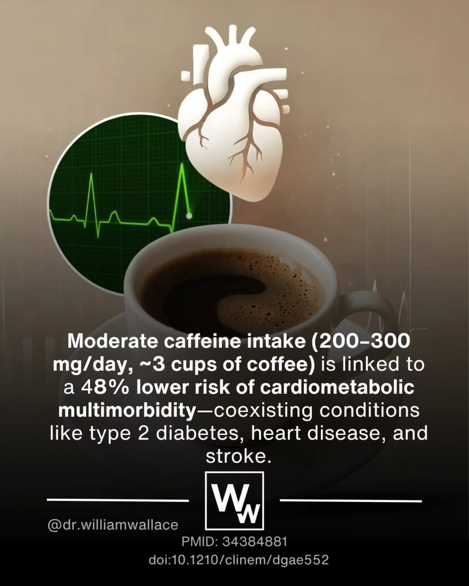

UK Biobank: 3 cups of coffee a day linked to 48% lower cardiometabolic multimorbidity
Louis shares a UK Biobank analysis (over 500,000 people, 11 years) in which three cups of coffee daily was associated with 48% lower new-onset cardiometabolic multimorbidity, and 200-300 mg of caffeine with 41% lower. Moderate caffeine was also linked to lower VLDL; this is observational data.